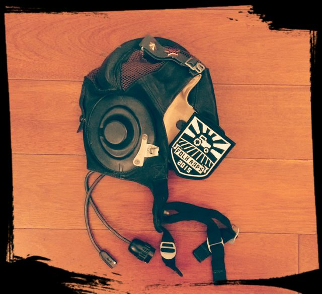
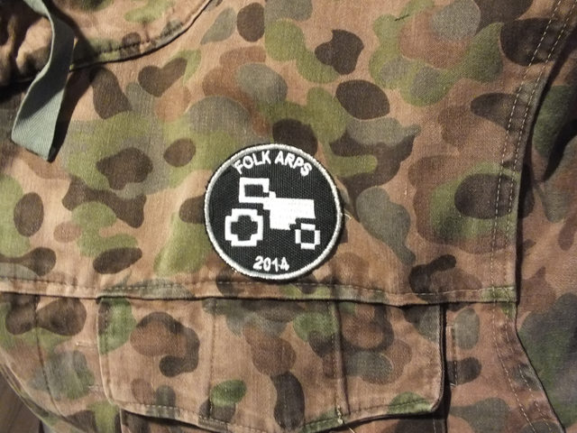

Your ultimate all-in-one guide to dying gloriously with your fellow comrades!
Hey, comrade Commissar, I've been meaning to talk to you! I've noticed a batch of those "biohazard" crates came in yesterday. I don't suppose the Party preparing a morale-patch related surprise for the winter holidays?
Of course not, comrade. "The winter holidays" are nothing but a consumerist ploy to drag people's attention away from the glory that is our Agrarian Utopia. Suggesting anything else would be counterrevolutionary talk!
Uh... of course, comrade Commissar. That's what I meant to say.
Exactly. On an entirely unrelated note: The Party has been hard at work preparing a special, end-of-the-calendar-year surprise! As you have so cleverly guessed, we are rolling out the new and improved version of the last year's new and improved morale patch.
An improved improved morale patch?
Exactly! The old velcro backing has been retained, but the shield shape has been streamlined for better aerodynamics.
That sounds excellent! But wait, I've noticed the crates were noticeably heavier than last year's. how are the patches streamlined if they're also heavier?
No, that's just the lead lining. The patches retain roughly the same size. The behind-the-scenes workings, however, have been significantly upgraded. I hear the production process uses only a quarter of agar base it used earlier.
What's agar?
It's a gelatinous...the point is, we've made the whole process much more efficient. It uses less man-hours, less resources, and the patch itself has a much, much longer expected half-life.
That's excellent news, comrade Commissar! I'll be sure to grab one as soon as they're available! ...Uh, how do I grab one? Is the procedure the same as last year?
Sadly, budgetary constraints have forced us to extend our self-equipment program into the next year. I am, however, proud to say that some of the savings achieved through greater efficiency will be passed on to all comrades. You will soon be able to don your brand new morale patch, for a fraction of the cost of the last one. Not to mention the new emblem pattern will help comrades blend in during ops on Tanoa.
I wouldn't be so sure about that. Since we got the last batch of patches, one guy in my unit turned green.
Hahaha, comrade, I'm sure you are referring to "going green". It means someone-
No, I mean, since August, he's been steadily turning ever so slightly green. Literally.
...Comrade, would you be so kind as to notify your unit that first thing tomorrow morning they are to attend a mandatory lecture on proper uniform maintenance and personal hygiene.
Actual info: We've ordered a new batch of morale patches, with a brand new Tanoa theme! We expect them to be arriving sometime around 2016-01-15. The size is 10x7,5, and they come with a velcro back. Each patch can be had in exchange for 5 units of whatever your preferred currency is (as long as it's USD, EUR or GBP), shipping included, and, as usual, all profits (if somehow there is any) go towards the Dacha whiskey budget maintennance of the K-IV Widowmaker.
All funds can be sent to the standard, server-fund@folkarps.com paypal account, along with a message to Prime Minister Netkev, who, as always, has our full support.
Comrade Commissar, what are those strange crates that have been showing up all over the base?
The leaky ones, the glowing ones, or the ones with the biohazard stickers?
Uh...well, let's start with those last ones.
Ah, you mean the ones for the patches? Well, we were going to make an official announcement a bit later, but since you're asking: The Party R&D committee is preparing for the launch of the all new and improved Folk ARPS Morale Patch! The production is going great, with like 20% less heavy metal poisoning, and we expect the full roll out to begin shortly. The science bureau has been hard at work to outdo it's last year's patch-related achievements, and I dare say they did a hell of a job at it, may they rest in peace!
Improved morale patch? Does it really improve morale?
I assure you, comrade, morale improvement is definitely one of the possible sideeffects! Not only that, but the size has been practically doubled, and the head of the science department assures me that the new shield shape will significantly boost the provided protection.
Protection? Are the patches bulletproof?
Uh...sure, why not. Anyway, they also added velcro backing, to make it even easier to attach to your jacket and/or backpack!
That's fantastic! How do I get one?
You will be fully informed of the distribution process as soon as the engineering department irons out a few kinks. They assure me they can get them to below 300 rads by Wednesday, so keep your ears peeled! You might just want to sign up for one in advance!
I definitely will! I've seen some comrades wearing the last year's patch, and they were all glowing with pride! I will be sure to get one of my own this time!
Uh, yes, absolutely, pride. Glowing with pride.
Right.
OK, jokes aside, just like last year, we are ordering a batch of custom made patches, made after a design lovingly crafted by comrade Tigershark. Unlike the old design, the patches are larger, at 8cm width and 9.5cm height. The patches will be available to anyone interested, at 7GBP/10USD/10EUR, international postage included. All money earned (if, by some freak accident, there is any) will go towards next year's upkeep of our K19-III Widowmaker game server. So you get to have a patch, and contribute to paying Tiger's lawyer fees for FA's continuing existence.
Do your share, and look cool doing it!
Comrades of the Politburo, what's this rumour I hear about a secret Party project to create patches?
Trading in rumours, comrade? A dangerous business that can get you arrested! However, in this case the rumour is true. Behold, prototypes from the secret facility created by comrade Tigershark (no, not that facility, a new one):
How do I get hold of one?
Once we've ironed-out (hurr) some issues with the first batch (radiation, unacceptable worker mortality rates ... nothing too serious), we shall initiate a programme of distributing patches to comrade-supporters of our server, K19-III. More details will follow at a later date, but you'll have to excuse me for now because I have a headache and nausea ...
Comrade? Comrade, are you there?
Unfortunately, 2014 edition patches are now out of stock.